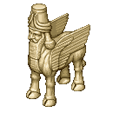
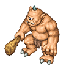

4.0资料片-强力BOSS降临
|  | 人首牛身： 人首牛身来自于美索不达米亚平原传说中，外形十分特殊，它是由人头、狮身、公牛蹄组合而成的，在波斯人眼中，人首牛身是一种王权神圣不可侵犯的象征，在许多宫殿入口处，都可看见人首牛身的神像竖立在两测。相传人首牛身是奉太阳神的旨意，来阻止各种万兽对太阳子民的攻击与威胁，在其它民族的眼中，人首牛身是一种守护神，相信只要信仰��，就可以得到永久的守护。 |
|  | 独眼巨人： 独眼巨人是希腊神话代表作之一，因额头正中有一只眼睛而著称。原本独眼巨人是神的儿子，经过几番波折后，最终脱离神的体系成为一个单独的独眼巨人，生性粗野残暴，专门捉补人类来享用，也因独眼巨人作恶多端，最后被囚禁于塔尔塔罗斯地窖之中，专门为众神来铸造精良的神器，相传宙斯手中神器就是由独眼巨人锻造而成的。 |